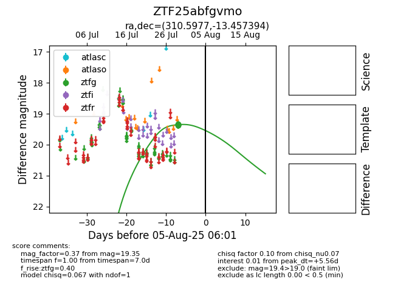

Target ZTF25abfgvmo at 2025-08-05 06:01, see:
FINK: fink-portal.org/ZTF25abfgvmo
Lasair: lasair-ztf.lsst.ac.uk/objects/ZTF25abfgvmo
ALeRCE: alerce.online/object/ZTF25abfgvmo
alt names
ZTF25abfgvmo (ztf,fink)
coordinates:
equatorial (ra, dec) = (310.5977,-13.45739)
galactic (l, b) = (32.8842,-30.59547)
photometry
last ztfg=19.35
6 ztfg detections
